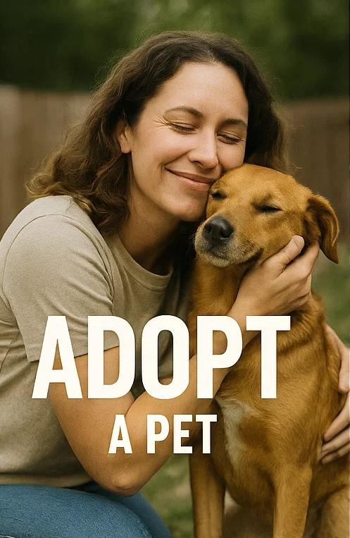
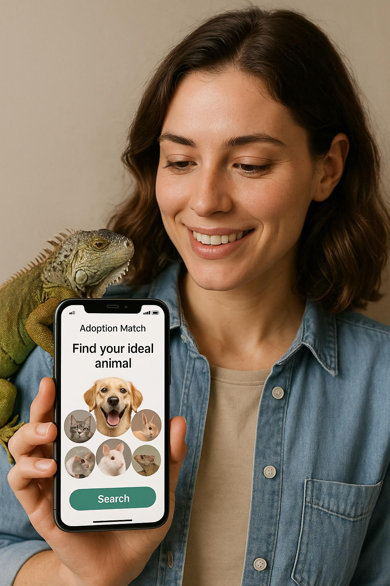

Compawss is your companion on the journey to adoption. We connect you to all adoptable animals listed across shelters in your country — or, in the case of the European Union, from shelters in every participating country.
🐾 But we go beyond listings. With our AI Matching System, we learn about your lifestyle, energy level, home environment, and wishes — then gently suggest pets whose personalities and needs are a perfect fit.
No more scrolling endlessly or missing out on that one special companion.
Volunteering shouldn’t feel confusing or limited. With Compawss, you can see all the shelters and organizations currently seeking help, both in your country and across borders.
Whether you have an hour a week, a special skill, or just a big heart, Compawss matches you with volunteer tasks that truly matter — from walking dogs, caring for exotic animals, helping at events, or supporting online operations.

Shelters and rescues often struggle to promote adoption fairs, open-door days, or fundraising events.
Compawss solves that with a built-in AI event booster: just enter your event and we’ll help share it across communities and social platforms, reaching people who care.
We support shelters, adopters, rescuers, volunteers, and communities with tools to: